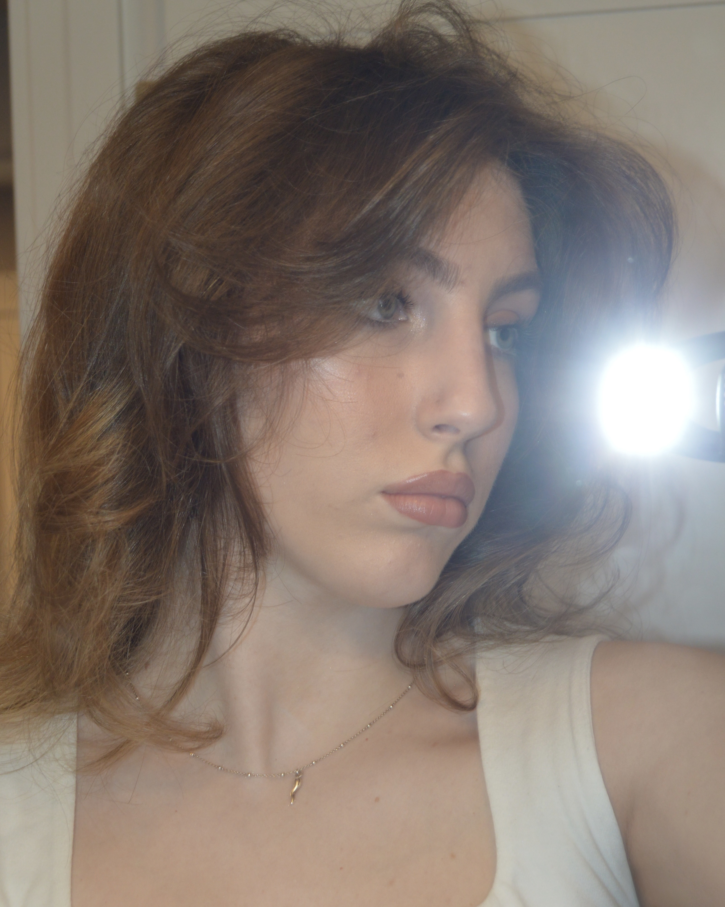

Mya Stenson
Hi, I’m Mya Stenson—a multimedia artist exploring the emotional terrain of memory, intimacy, and identity. Working primarily in digital collage and photography, I draw from surrealism to create visual narratives that feel both dreamlike and deeply personal. I believe art is a space for reflection, disruption, and connection— and I aim to evoke emotion before explanation, inviting viewers into a world that asks them to feel first and interpret later.
My creative lens has been shaped by my studies in Media and Studio Arts, my upbringing in an Italian immigrant family, and my travels through diverse cultures around the world. These experiences continue to expand how I understand storytelling, human connection, and the quiet power of visual language.